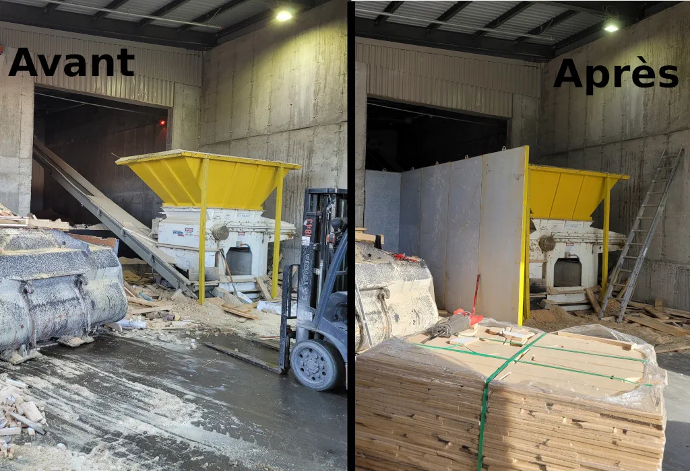
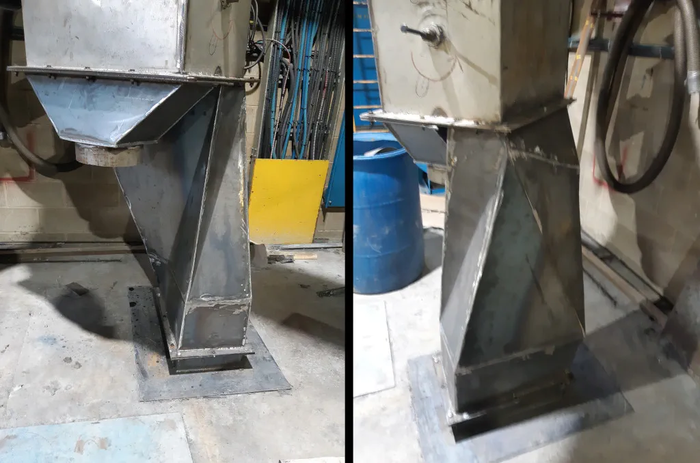
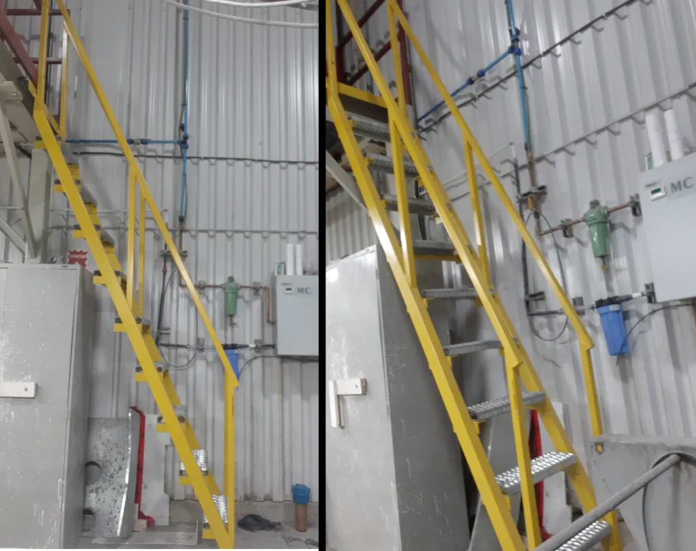
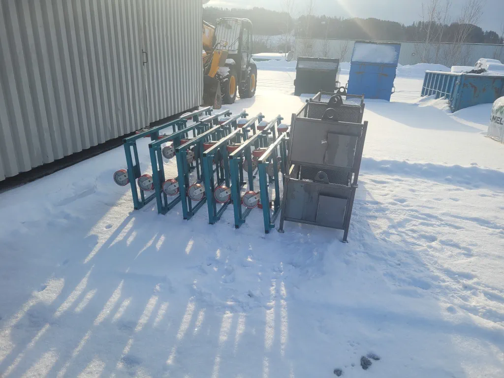
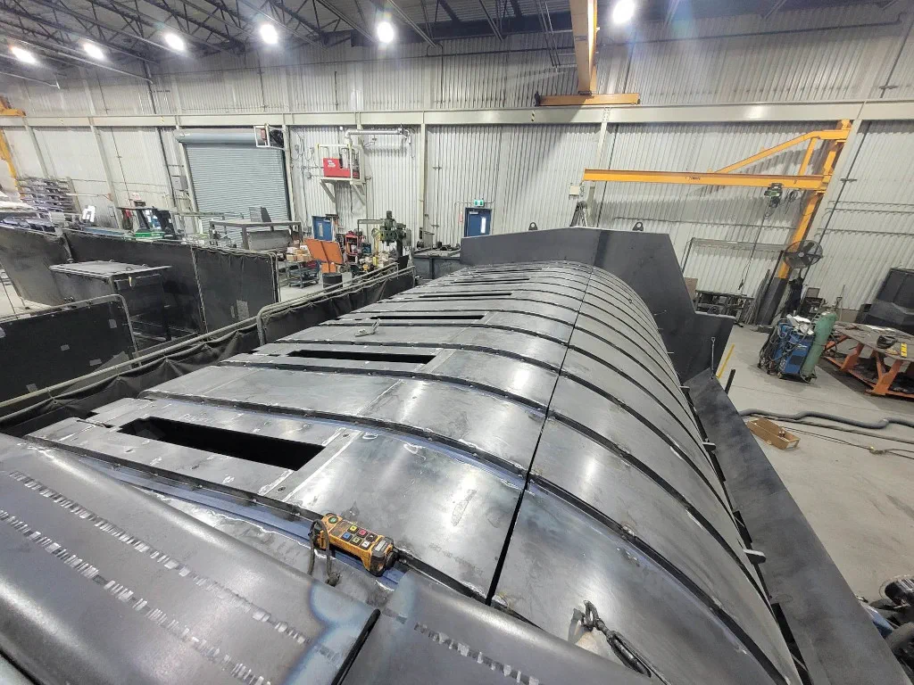
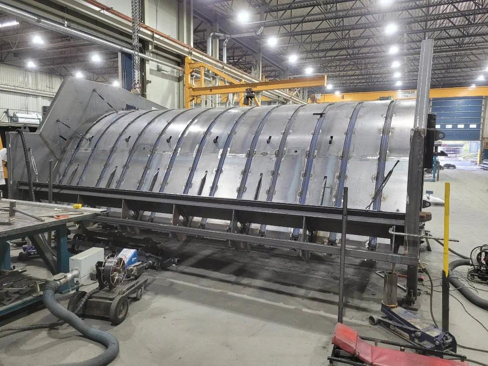
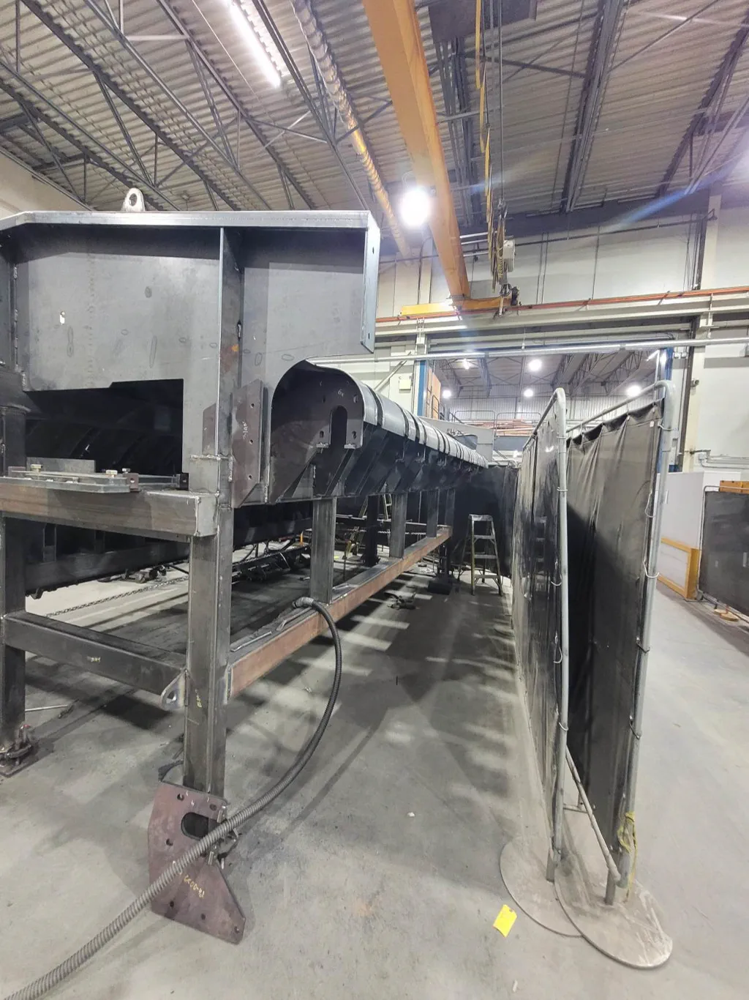
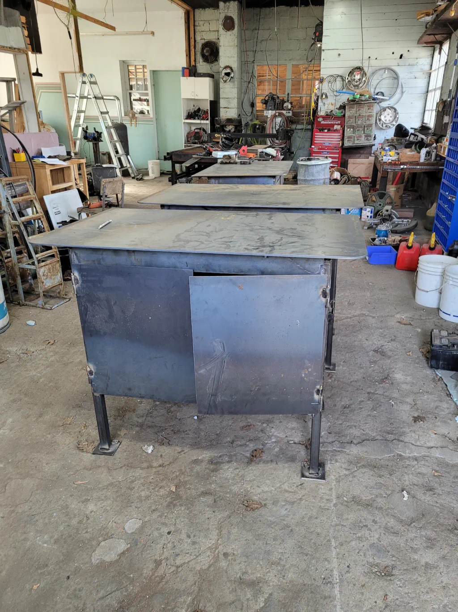

Mécanique Luc Vallerand fabrique des pièces et des structures métalliques sur mesure pour les entreprises et les projets industriels. À partir de vos plans ou de vos besoins, nous réalisons des pièces uniques comme de petites séries, en visant un résultat solide, précis et durable. L’atelier est situé à Saint-Honoré-de-Shenley et dessert la Beauce et la région de Québec depuis 2019.
Chaque fabrication commence par une compréhension claire du besoin : usage de la pièce, contraintes d’installation, dimensions disponibles et délai souhaité. Cette étape permet de proposer une solution réaliste et de limiter les ajustements en cours de projet.
Ce que nous réalisons
- Pièces métalliques fabriquées selon vos plans ou vos mesures.
- Structures, supports, cadres et assemblages sur mesure.
- Échelles et éléments métalliques adaptés à votre installation.
- Fabrication à l’unité ou en petite série.
- Préparation, assemblage et soudage des composants.
- Contrôle des dimensions et de la finition avant livraison.
Notre méthode
- Analyse du besoinNous étudions vos plans, photos ou exigences et validons l’usage prévu de la pièce.
- SoumissionLa solution, le délai et le prix sont confirmés avant le début de la fabrication.
- FabricationLes pièces sont préparées, assemblées et soudées en atelier selon la solution retenue.
- Contrôle et remiseNous vérifions les dimensions et la finition, puis convenons de la livraison ou de l’installation.
Fabriquer sur mesure, c’est savoir s’adapter
Si une cote doit être ajustée ou si une solution plus simple existe, nous vous en faisons part avant la fabrication. Notre objectif est de vous livrer une pièce utile, bien ajustée et conçue pour l’usage prévu, sans complication inutile.
Questions fréquentes
Pouvez-vous fabriquer à partir d’un plan ou d’un exemple ?
Oui. Nous pouvons travailler à partir de plans, de croquis, de photos ou d’une pièce existante à reproduire ou à adapter. Les informations sont validées avant la fabrication.
Fabriquez-vous une seule pièce comme de petites séries ?
Oui. Nous réalisons des pièces uniques et de petites séries. Le volume et la répétition sont précisés dès la demande de soumission.
Assurez-vous la livraison ou l’installation ?
Selon le mandat, la pièce peut être récupérée à l’atelier ou installée sur votre site. Les modalités sont confirmées avec la soumission.
Réalisations








Parlons de votre prochaine réalisation.
Appelez-nous ou écrivez-nous pour discuter de votre besoin et obtenir une soumission.